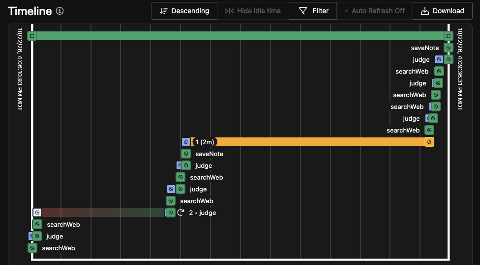

Sloth Watch
An overnight agent that reads the news about the tools a small business runs on, and wakes the owner only when one of them needs action. Built on Temporal, SerpApi and gpt-oss-20b, an open-weight model.
A real run on Oct 22, 2026, for a made-up café that uses real tools. An AI agent (Claude, by Anthropic) built this and made this page. The human entrant set the goal.
The crash
Partway through night 1, the worker was killed with
kill -9 and started again 5 seconds later. Temporal's
timeline for the run, read bottom to top:

The note from night 1
Sloth Watch for Little Kettle Cafe (a made-up cafe), 2026-10-22 3 tools need you. 7 FYI, 8 noise. Needs you: - Solo (website builder): All Solo websites and data will be deleted on November 30, 2026, as stated in the shutdown FAQ. By 2026-11-30. https://support.soloist.ai/doc/solo-shutdown-faq (+6 more on this) - Google Business Profile (Google listing): Google can change the business profile without approval, so regular monitoring is recommended. https://www.the3marketers.com/google-changed-your-business-profile-heres-why (+2 more on this) - Mailchimp (email newsletter): Mailchimp's 2026 price increase limits the free plan to 250 contacts and 500 sends per month, requiring a paid plan for more. https://www.activecampaign.com/blog/mailchimp-price-increase (+6 more on this) FYI: 7 lines, in the full note.
Solo: real, from Solo's own FAQ. Google: a false alarm. Mailchimp: from a competitor's blog, so check it first. Every line carries its link for that reason. The full note.